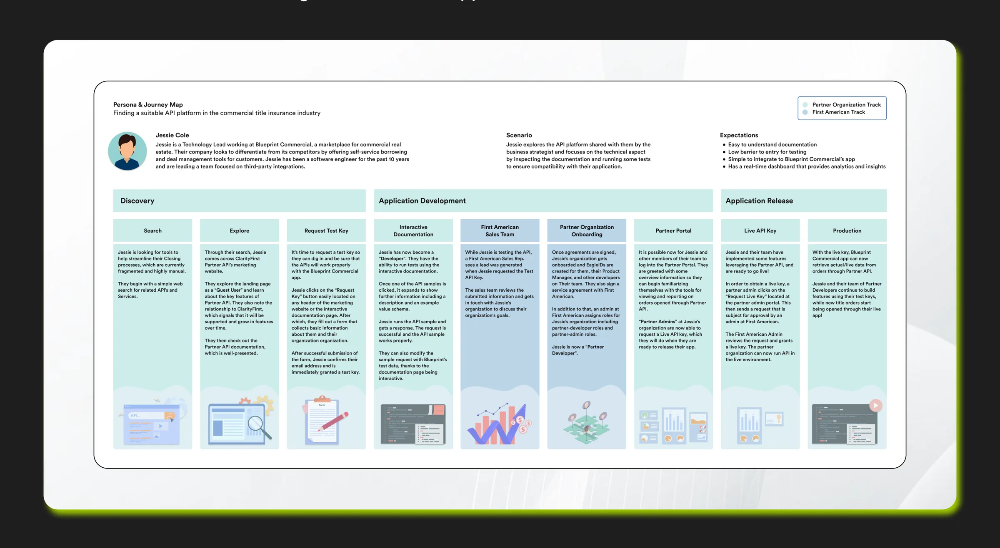
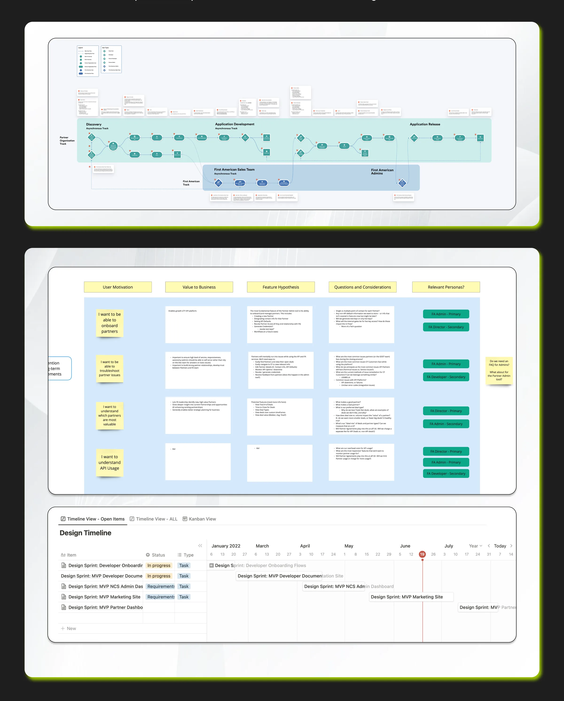
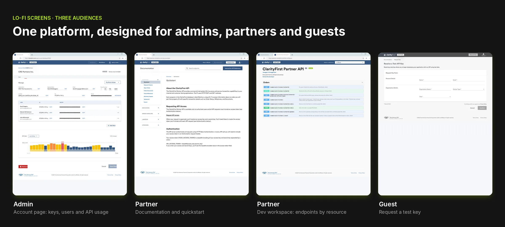
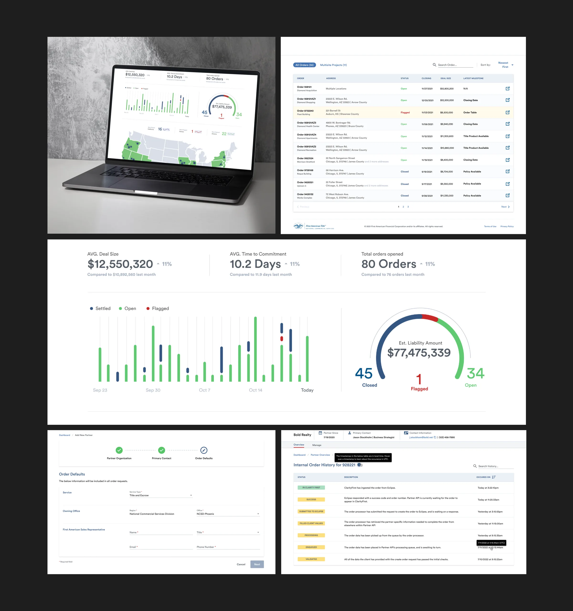
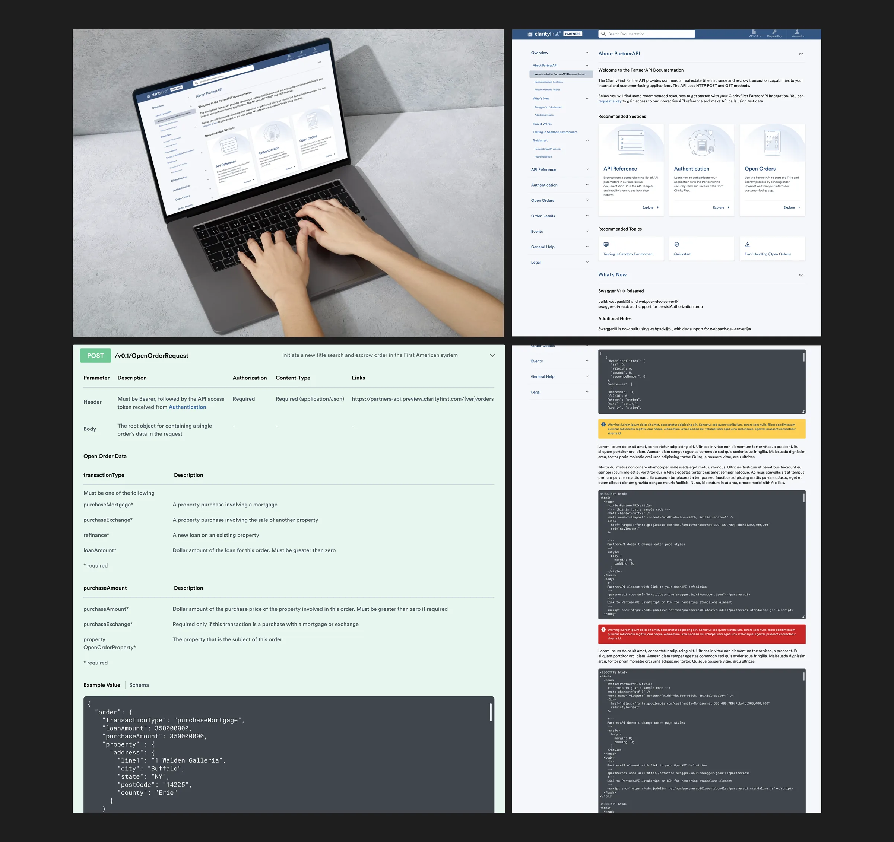
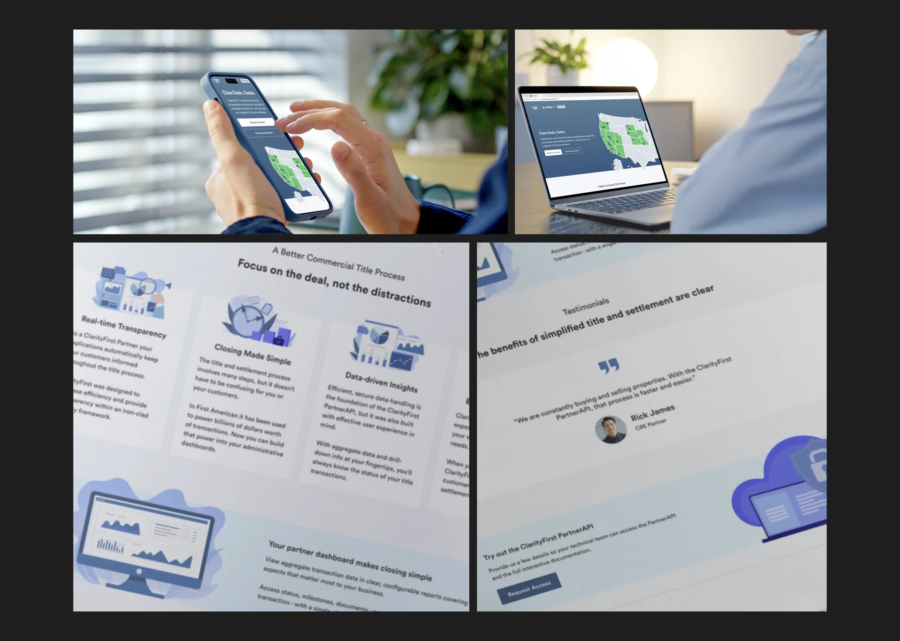

Problem statement
…programmatically connect with commercial sector services, allowing 3rd parties to streamline the title process by building them into their applications?
Role & responsibilities
As the Lead Product Designer, I spearheaded the product’s design strategy, overseeing the full design lifecycle — from initial discovery workshops to final implementation. I led a small design team and partnered closely with product managers and engineers to create intuitive user journeys for the mortgage and real estate sectors.
I also drove multiple post-MVP iterations, improving usability, performance, and adoption based on customer feedback and business goals.
- Owned design strategy from discovery workshops to implementation
- Led a small team of product designers
- Partnered with product managers and engineers
- Drove post-MVP iterations based on customer feedback
From workshops to tested flows
- WorkshopsLearned who the users are and what they need
- PersonasDefined ideal users and their expectations
- Journey mapMapped discovery, development and release
- WireframesValidated feasibility with engineering and PM
- High-fidelityDesign system, prototypes and user testing
Jam sessions & defining the users
Based on the user information that we learned in the workshops, I imagined the ideal personas that would fit the scenario perfectly and assigned a list of expectations to them.
- An API platform with a clear documentation guide
- Manage deals and orders with access to live data
- Easy integration into their own application

Workshops & user journey
Along with the personas, I created a journey map divided into three phases. Each phase contained the steps that the persona would take to achieve their goal.
- Phase 1Discovery
- Phase 2Application Development
- Phase 3Application Release

Wireframes
Here we can see low-fi designs for the developer portal, specifically the onboarding experience. It should be quick and easy and should require basic information.
- 1 Request access
- 2 Confirm email
- 3 Receive key & password
- 4 Explore docs & test APIs
I validated the feasibility of the concepts with the front end engineers before moving to high-fi designs, and with the PM to ensure the user stories and business requirements were met.

Research, Options & Trade-offs
What research revealed
Developers wanted to test the API before talking to sales. Business stakeholders wanted to see value before involving developers.
Directions explored
- Option A: Documentation-only developer portal. Dropped: didn't serve the business buyers.
- Option B: Three connected surfaces: marketing site, developer portal and admin dashboard. Chosen.
Trade-offs
The MVP launched with a limited set of endpoints and sandbox access, with more added in post-MVP iterations.
Results
8 clients signed up to adopt the API platform, plus new leads.
High-fidelity designs
In the high-fidelity design phase, it's time to focus on the design details. I ensure that the paddings and margins are pixel perfect. I review the designs done by the other product designers on the team to ensure consistency in patterns and overall user experience. At this stage, I ensure that all components, colours and text styles are linked to the design system.
Before going live with the designs, I prototyped the main flows and interactions. I also love to be part of the user testing sessions to observe how users are reacting to the design and how easy it is for them to navigate through it.
Admin Dashboard
Internal teamsDesigned for internal teams to manage deal flows, monitor API usage, and oversee organizational health with granular control.

Developer Portal
DevelopersA streamlined experience for developers to access documentation, manage keys, and test endpoints in a sandbox environment.

Marketing Website
Enterprise leadsThe public-facing side of the platform, focused on clear value propositions, trust, and converting enterprise leads.
